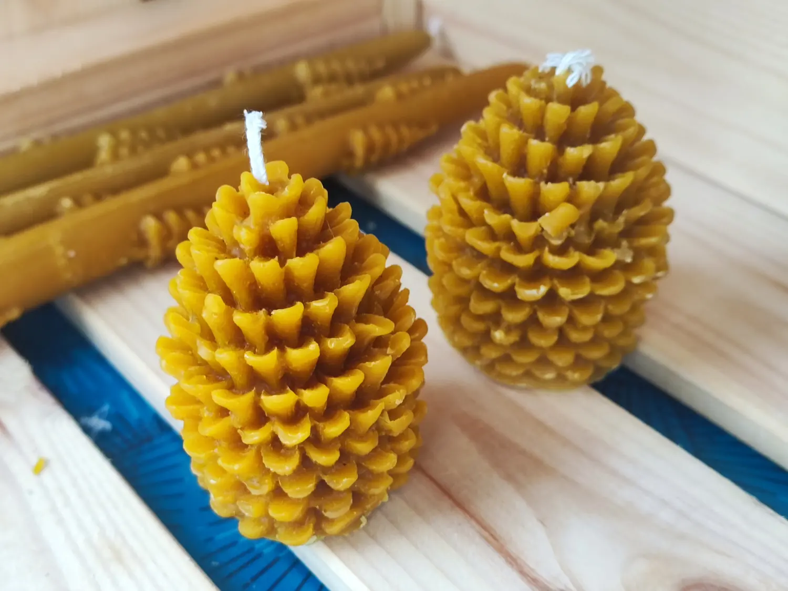
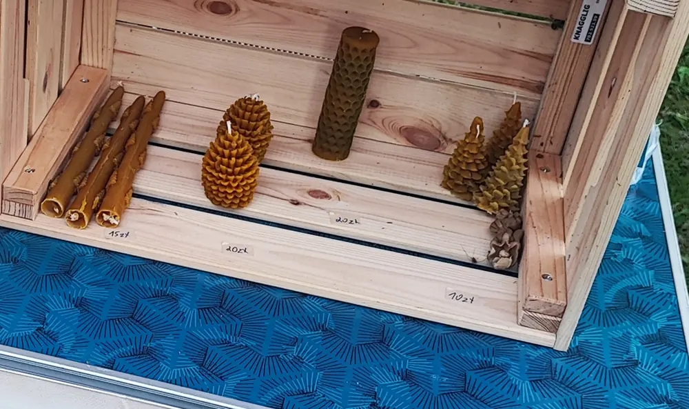
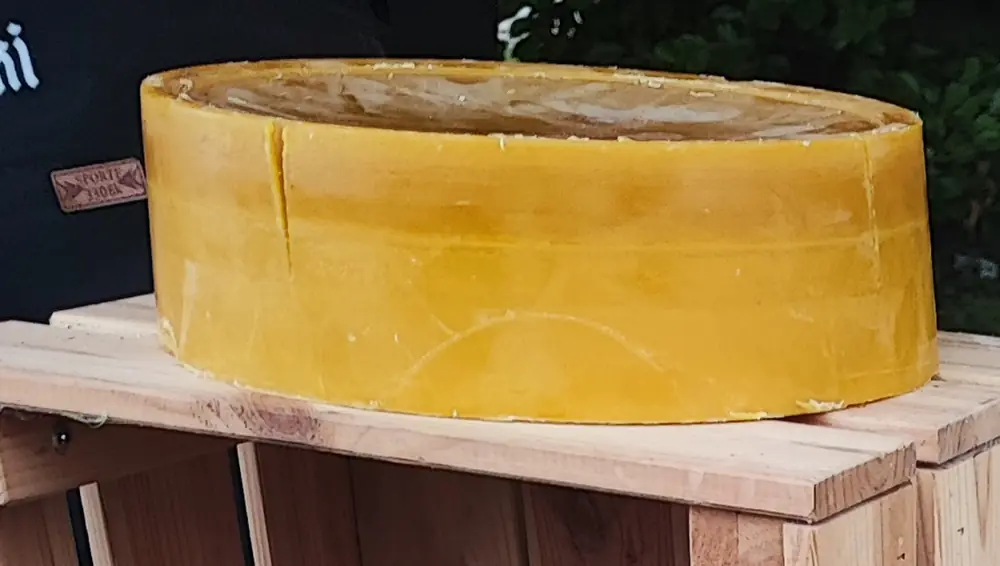

Szyszki z wosku
Odlewane w formie, palą się spokojnym, ciepłym płomieniem. Dwa rozmiary — mniejsze dobrze wyglądają w komplecie.
10–20 złStrona główna — Wosk pszczeli i świece
Świece rolowane z węzy, szyszki odlewane w formie i czysty wosk w bloku — wszystko z własnej przetopki.
Wosk przetapiam sam z odsklepin i starych plastrów. Część wraca do uli jako węza, z reszty powstają świece, które pachną pasieką, a nie perfumami.

Odlewane w formie, palą się spokojnym, ciepłym płomieniem. Dwa rozmiary — mniejsze dobrze wyglądają w komplecie.
10–20 zł
Rolowane ręcznie z arkusza węzy: cienkie stożki i grubsze walce w plaster miodu. Bez domieszki parafiny.
15–20 zł
Czysty, przetopiony wosk dla rękodzielników, mydlarzy i pszczelarzy. Odcinam kawałek o wadze, jakiej potrzebujesz.
cena za kilogram — zapytajWosk pszczeli pali się dłużej i spokojniej niż parafina, ale lubi równe warunki. Przy pierwszym zapaleniu daj świecy popracować, aż roztopiona kałuża sięgnie brzegów — wtedy będzie wypalać się równo do końca.
Knot skracaj do około pół centymetra przed każdym zapaleniem. Świecę stawiaj z dala od przeciągów, na niepalnej podstawce.
Wosk z czasem pokrywa się białawym nalotem. To nie pleśń, tylko naturalny wykwit — wystarczy przetrzeć miękką ściereczką.